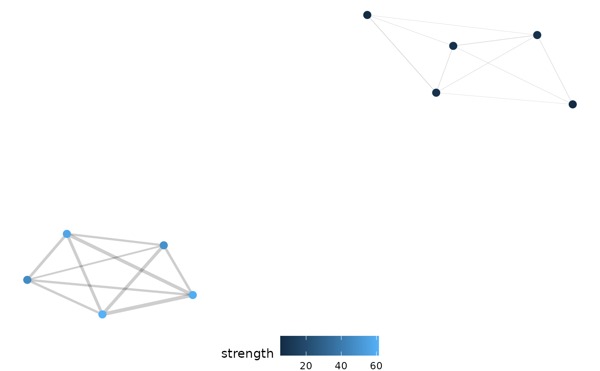
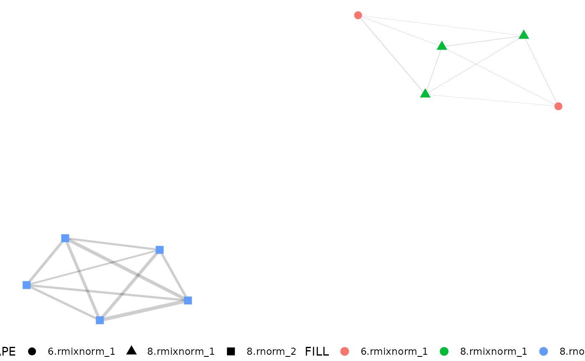
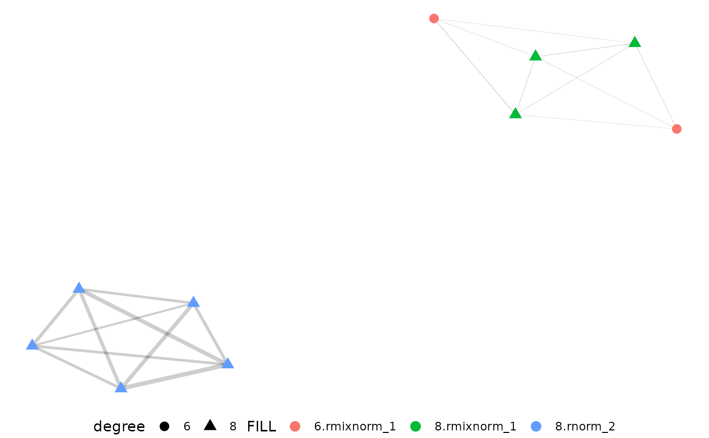

Easy igraph visualization with pcv.net output
Usage
net.plot(
net,
fill = "strength",
shape = NULL,
size = 3,
edgeWeight = "emd",
edgeFilter = NULL
)Arguments
- net
Network object similar to that returned from pcv.net, having dataframes named "edges" and "nodes"
- fill
Variable name(s) from the nodes data to be used to color points. By default "strength" is used.
- shape
Optional discrete variable name(s) from the nodes data to be used to change the shape of points. If this variable is numeric it will be coerced to character.
- size
Size of points, defaults to 3.
- edgeWeight
Edge dataframe column to weight connections between nodes. Defaults to "emd" for compatability with
pcv.emd.- edgeFilter
How should edges be filtered? This can be either a numeric (0.5) in which case it is taken as a filter where only edges with values greater than or equal to that number are kept or a character string ("0.5") in which case the strongest X percentage of edges are kept. This defaults to NULL which does no filtering, although that should not be considered the best standard behaviour. See details.
Examples
library(extraDistr)
dists <- list(
rmixnorm = list(mean = c(70, 150), sd = c(15, 5), alpha = c(0.3, 0.7)),
rnorm = list(mean = 90, sd = 3)
)
x <- mvSim(
dists = dists, n_samples = 5, counts = 1000,
min_bin = 1, max_bin = 180, wide = TRUE
)
emd_df <- pcv.emd(x,
cols = "sim", reorder = c("group"), mat = FALSE,
plot = FALSE, parallel = 1
)
#> Estimated time of calculation is roughly 0.1 seconds using 1 cores in parallel.
net <- pcv.net(emd_df, meta = "group")
net.plot(net)

net.plot(net, edgeFilter = "0.25")
net.plot(net,
edgeFilter = 0.25, fill = c("degree", "group"),
shape = c("degree", "group")
)

net.plot(net,
edgeFilter = 0.25, fill = c("degree", "group"),
shape = c("degree")
)
